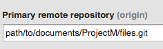

Git Reference
A collection of notes as I've learned Git. • Timothy Comeau • Revision Date: 2014-05-13
Roll-backs
-
What you want to do: You want to access an earlier commit's code.
git checkout #hashThis checkouts all of the files that had been last commited. You can also undo all changes and restore the current working files to the last commit by a HEAD reset:
git rest --hard HEADIf you want an individual file's last commited code, just check out that particular file
git checkout --fileBest practice is to checkout a previous commit as a branch:
git branch branchname a9c14
Branches
-
A branch is a development path. List created branches with
git branchbug-fix dev feature * master production workingThe branches can be merged together as need be, and eventually merged into development, production, or master
git branch working => this creates a branch called working git checkout working => this moves you into this branch [makes edits] git checkout master => this moves you back into the master branch git merge working => this merges working into masterTo delete a branch in spite of warning
git branch -D nameTo create a branch from a previous commit
git branch branchname a9c14
Merging
-
What you want to do: merge individual files from another branch.
In this case we have two branches:
* master workingAnd we'll switch into `working`
checkout workingMakes changes to a file such as style.css
git status modified: style.css git commit -a -m "committing changes made to style.css" # on branch workingThen to merge the modified file into `master`, checkout `master`
git checkout master git status #on branch masterand then checkout the file from the branch where it is changed
#on branch master git checkout working -- style.css => pulls working branch's style.css filegit status modified: style.css git commit -m "committing style.css modified in working branch"Branches can be merged together as need be, and eventually merged into development, production, or master
git branch working => this creates a branch called working git checkout working => this moves you into this branch [makes edits] git checkout master => this moves you back into the master branch git merge working => this merges working into masterYou need to be in the branch that you want to merge into. In the above example, our HEAD (location) was in the `master` branch and from there we issued the merge command to bring in `working`.
Working with Remotes
-
Any location can be a remote, by using bare repos.
Set up a bare repo by
cdinto the folder you want to make the remote. In this case the remote will be at path/to/document/ProjectM and we will set up a bare repository called files.git.cd /path/to/documents/ProjectMgit init --bare files.gitOur local development files are at /Sites/Dev/ProjectM-Local, which already has Git running on it. Having returned to this directory in the Terminal, we add the remote to the local's Git config:
git remote add add origin /path/to/documents/ProjectM/files.gitThis code literally reads: "remote command: add a remote called origin at following path".
Sync the local Git-repository (.git) files with that of the remote named "Origin" by pushing them there. The default name of a default branch of a local repository is always "master", thus the command to push the master's files to the origin is:
git push origin masterIn the Github GUI, this address appears in the Settings panel.

List Remotes
git remote...will list remotes
git remote -v...will list details
Pushing Branches to Remotes
-
On a project with two branches: `master` & `deploy`:
$ git branch * master deployYou set up remote:
git remote add origin /path/to/bare-repo.gitYou then push to remote:
git push origin masterThis pushes to the remote the `master` branch
You then want to push the branch deploy
git push origin deployThis pushes that branch to the remote.
The .git files just store Git's data, and are not an active repository. In order to view the files, you need to clone this repo.
git clone /path/to/bare-repo.gitOnce done, if you
git ston the cloned repo you will still see you're on branch `master`.If the branches were pushed to the origin after you cloned, you need to sync the clone repo with the bare-repo.git files by using the pull command:
git pull originAfter, in order to see the new pushed branch(s):
git branch -rRunning git branch -r on a fresh cloned repo will show branches if there any.
In order to makes these active it within the cloned remote/origin:
git checkout --track -b deploy origin/deploythen:
git branchand you'll see the new branch listed.
Tagging
-
To tag a commit. In this case, we will tag a commit as version 1.0 with a message:
git tag -a v1.0 -m "my version 1.0"To list tags, a command similar to listing branches
git tag
Commiting
-
To fix a commit message:
If you want to add files to a commit, like if you'd forgotten beforegit commit --amend -m "This is the correct message"git add `files` git commit --amend -m "commit message"
Re: Github
-
Perhaps you want to delete the git history of a GitHub repo, for example for a repository containing template-files. After cloning, cd into the repo directory and delete it's .git directory:
rm -rf .git git init git add . git commit -m "Initial commit"This resets the commit history completely.
You can also just move the contents out of the folder created/downloaded from Github, which will leave behind that directory's .git folders, thus eliminating the Git history on the files.